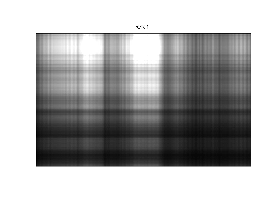
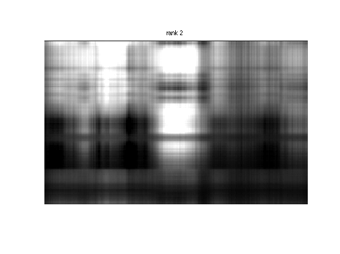
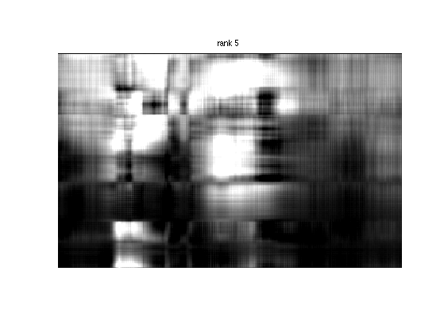
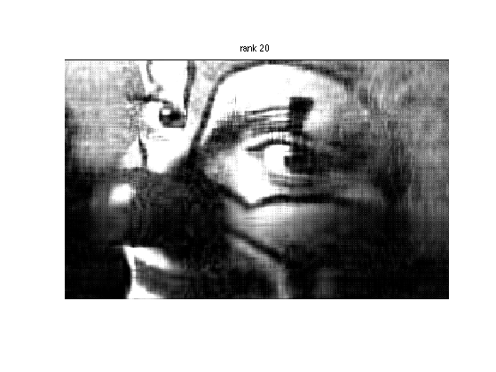
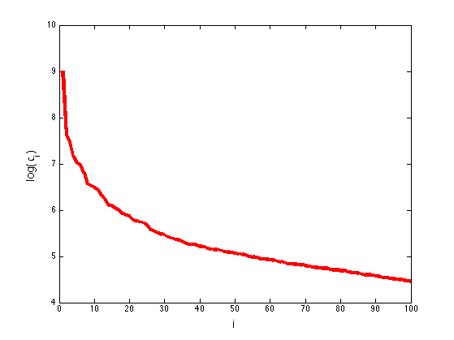
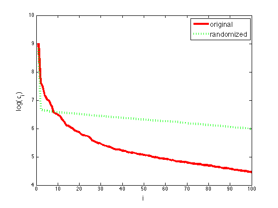

Visualize low rank approximations of an image
based on Cleve Moler's book ch10 p25
Contents
% This file is from pmtk3.googlecode.com %loadData('clown'); load('clown'); % builtin to matlab r = rank(X); disp(r); [U, S, V] = svd(X, 0); ranks = [1 2 5 10 20 r]; R = length(ranks);
200
for i=1:R figure(); k = ranks(i); Xhat = (U(:, 1:k)*S(1:k, 1:k)*V(:, 1:k)'); image(Xhat); colormap(gray(64)); axis image; axis off title(sprintf('rank %d', k)) printPmtkFigure(sprintf('svdImageDemoClown%d', k)); end   
fs = 14; sigma = diag(S); K = 100; figure(); plot(log(sigma(1:K)), 'r-', 'linewidth', 4) ylabel(sprintf('log(%s_i)','\sigma'), 'fontsize', fs); xlabel('i', 'fontsize', fs) %printPmtkFigure svdImageDemoClownSigma;
Scramble the data and replot (Hastie01 p491)
N = numel(X); perm = randperm(N); X2 = reshape(X(perm), size(X)); [U, S2, V] = svd(X2, 0); sigma2 = diag(S2); hold on plot(log(sigma2(1:K)), 'g:', 'linewidth', 4) h=legend('original', 'randomized'); set(h, 'fontsize', fs); printPmtkFigure svdImageDemoClownSigmaScrambled;